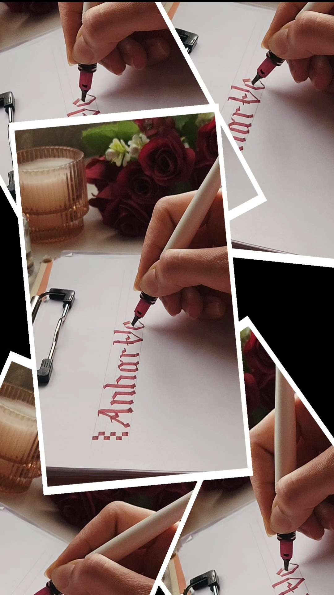
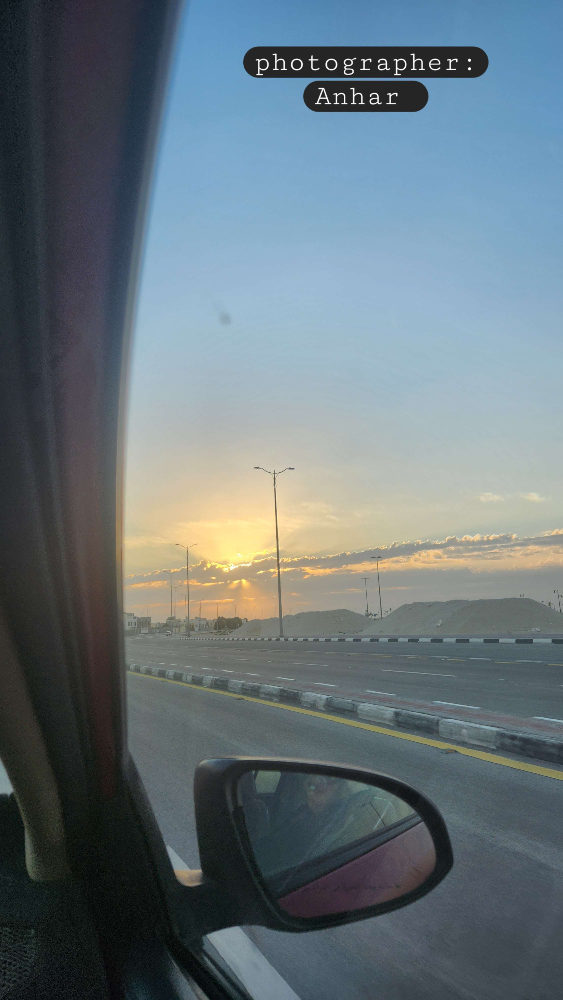
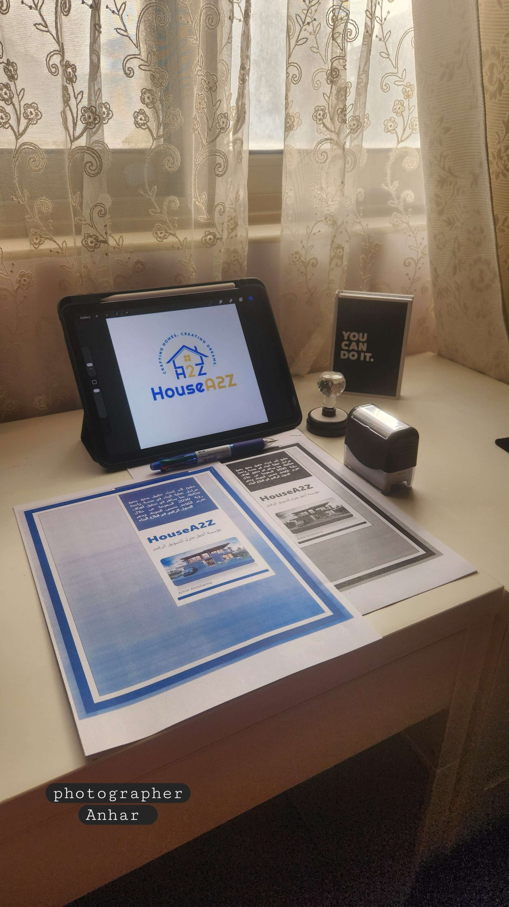

من فكرةٍ صامتة… إلى أثرٍ يبقى.

بعض الأفكار لا تُولد مكتملة؛ إنما تنضج بالوقت، والوعي..
واللحظات تتحول في لحظة إلى أثر!
وفي مساحةٍ هادئة، بين الفكرة الأولى ولمسة الإدراك.. تبدأ الحكاية..
فليست كل فكرةٍ تولد مكتملة، ولا كل معنى يحتاج إلى سرعة. بعض الأفكار تحتاج وقتًا، وإصغاءً صادقًا، ومساحة آمنة لتتشكل.
فالإبداع .. كما نراه في عالم أنهار .. ليس اندفاعاً نحو الإنجاز..
بل رحلة داخلية تُبنى على الوعي والإحساس بالمغزى..
وأن الكلمة حين تُكتب بصدق، تتحول مع الزمن إلى أثر.

هل التباطؤ علامة ضعف؟!
في المرة الأولى، ظننت أن التباطؤ علامة ضعف.
أن التردد يعني قلة ثقة،
وأن من يتأخر… يتأخر عن النجاح.
لكن التجربة كانت معلماً صادقاً. في عالمٍ يحتفي بالسرعة!

استشرت، وبدأت، وأنفقت...
لكنني أدركت متأخرة أن بعض الاستشارات لم تكن في محلها،
والمال بُذل في مرحلة لم تكن قد نضجت بعد.
تعلمت متأخرة..!
أن بعض القرارات لا تُتخذ تحت ضغط التوقيت،
وأن بعض الأفكار .. إن أُجبرت على الظهور قبل نضجها..
تنهار عند أول اختبار حقيقي.
لذلك لم يكن التباطؤ هو المشكلة،
بل تجاهله..!
حين كنت أركض خلف التنفيذ، كنت أظن أن الحركة تعني تقدّماً،
لكنني أدركت لاحقًا
أن الحركة بلا وعي قد تكون دورانًا في المكان نفسه.
وفي غياب الجذور
أدركت أن أي مشروع، مهما بدا واعداً،
إن لم يُزرع في تربة صحيحة،
ويُروى بنية،
وتوقيت واعٍ...
فلن يُثمر، مهما طال السعي.
حينها أدركت...!
أن السقي وحده لا يكفي!
وأن الفكرة... إن زُرعت في غير تربتها،
لا تُنقذها كثرة العناية.
جوهر الرحلة

في ريادة الأعمال..
ليس كل تأخر خسارة، وليس كل سرعة مكسباً.
أحياناً…
التباطؤ هو لحظة الوعي التي تعيد فيها ترتيب الأسئلة:
لماذا أبدأ؟
هل هذا الوقت مناسب؟
وهل هذه الفكرة ناضجة بما يكفي لتحمل الواقع؟
فالتباطؤ ليس انسحاباً من الطريق… بل وقفة احترام له.
في عالم أنهار..
نؤمن أن الإبداع لا يقاس بسرعة الوصول، بل بصدق الرحلة.
وأن الفكرة التي يُمنح لها الوقت الكافي تُثمر…
لأنها تصل وهي تعرف لماذا وصلت..
مساحة تُذكّرك أن التمهّل ليس تأخيرًا…
بل وعيٌ يسبق القرار.